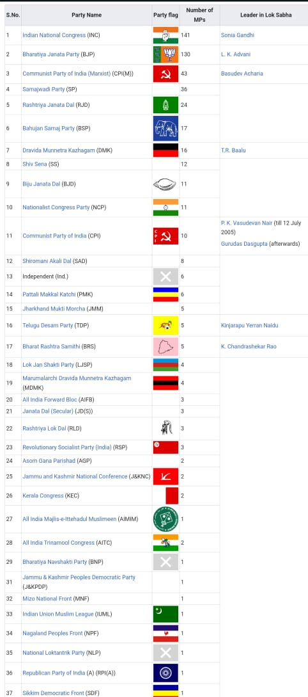

Analysis of 14th Lok Sabha

The 14th Lok Sabha (17 May 2004 – 18 May 2009) was convened after the 2004 Indian general election
held in four phases during 20 April – 10 May 2004, which led to the formation of
first Manmohan Singh ministry (2004–2009).
Indian National Congress-led United Progressive Alliance won 62 more seats than
previous 13th Lok Sabha. The Lok Sabha (House of the People) is the lower house in the Parliament of India.
8 sitting members from Rajya Sabha, the Upper House of Indian Parliament, were elected to 14th Lok Sabha
after the 2004 Indian general election.
Members
edit
Speaker: Somnath Chatterjee, Communist Party of India (Marxist), Bolpur, West Bengal
Deputy Speaker: Charanjit Singh Atwal, Shiromani Akali Dal, Phillaur, Punjab
Leader of the House: Pranab Mukherjee, Indian National Congress, Jangipur, West Bengal (PM Manmohan Singh was from Upper house)
Leader of the Opposition: Lal Krishna Advani, Bharatiya Janata Party, Gandhinagar, Gujarat
Secretary General: P.D.T. Acharya<
On 23 December 2005, the following 10 members were ousted from the 14th Lok Sabha
as per the adoption of the motion calling for their expulsion:
Narendra Kushwaha (BSP) – Mirzapur, Uttar Pradesh
Annasaheb M. K. Patil (BJP) – Erandol, Maharashtra
Y. G. Mahajan (BJP) – Jalgaon, Maharashtra
Manoj Kumar (RJD) – Palamau, Jharkhand
Suresh Chandel (BJP) – Hamirpur, Himachal Pradesh
Raja Ram Pal (BSP) – Bilhaur, Uttar Pradesh
Lal Chandra Kol (BSP) – Robertsganj, Uttar Pradesh
Pradeep Gandhi (BJP) – Rajnandgaon, Chhattisgarh
Chandra Pratap Singh (BJP) – Sidhi, Madhya Pradesh
Ramsevak Singh (Congress) – Gwalior, Madhya Pradesh